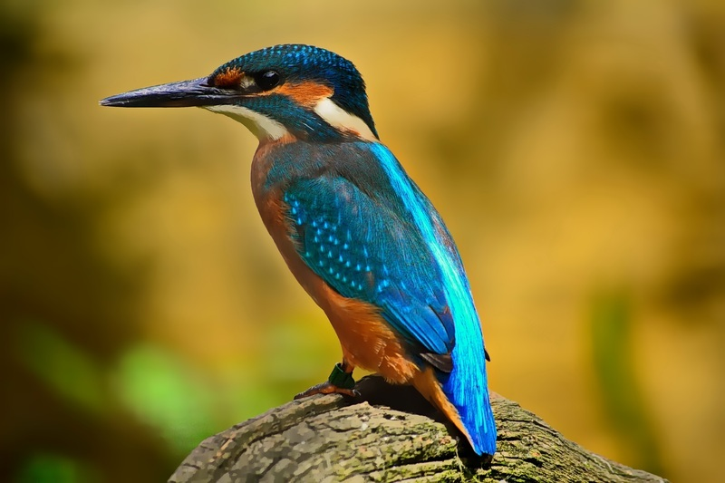

WebP — это формат файла, разработанный компанией Google в 2010 году. Его особенностью является продвинутый алгоритм сжатия, позволяющий сократить размер картинки без видимых потерь в качестве∗.
Естественно, основное преимущество — это размер. Сокращение размера положительно влияет сразу на четыре аспекта работы в интернете:
Но говорить о преимуществах WebP проще в сравнении с другими форматами.
Первая картинка формата JPG
Вторая картинка формата PNG
Третья картинка формата WebP
Выводы: если не всматриваться пристально в каждую картинку, можно сказать что они одинаковые. Однако, если присмотреться ко второй картинке PNG можно увидеть, что в центре тень песков выделяется "неровностями". У WebP и JPG такого не наблюдается.
Первая картинка формата JPG
Вторая картинка формата PNG
Третья картинка формата WebP
Выводы: При просмотре всех трех картинок сразу же обращает на себя внимание "пиксельность" картинки PNG. Этот формат явно хуже своих конкурентов. У картинок WebP и JPG качество прекрасное, визуально отличий не замечено.
Первая картинка формата JPG
Вторая картинка формата PNG
Третья картинка формата WebP
Выводы: У PNG явные проблемы с отображением фона на картинке. Но птичка, надо отметить, выгядит отлично. У картинок WebP и JPG качество прекрасное, визуально отличий не замечено.
ИТОГИ: На примере наших картинок можно подытожить, что при равных размерах файлов PNG уступает по качеству изображения, JPG и WebP тождественны по качеству.
Поддержка данного формата среди браузеров и веб-приложений постепенно растет. Сейчас с WebP не возникает проблем ни в Google Chrome, ни даже в Safari. Но остались сайты и программы, которые все еще не знакомы с этим расширением картинок. Поддержка в браузере Apple появилась не так давно, а в Internet Explorer не появится никогда.
Как было отмечено выше, проблема не только в браузерах, но и в других программных решениях. К примеру, в WordPress нет нативной поддержки WebP, а это, между прочим, популярнейшая CMS в мире. И таких ресурсов все еще много.
А еще WebP-файлы зачастую нечем открывать на компьютере. Поэтому некоторые пользователи Windows и Linux негодуют, когда пытаются скачать картинку через Google Chrome, а получают файл с невнятным расширением, который нельзя открыть.
∗По материалам сайта timeweb.com